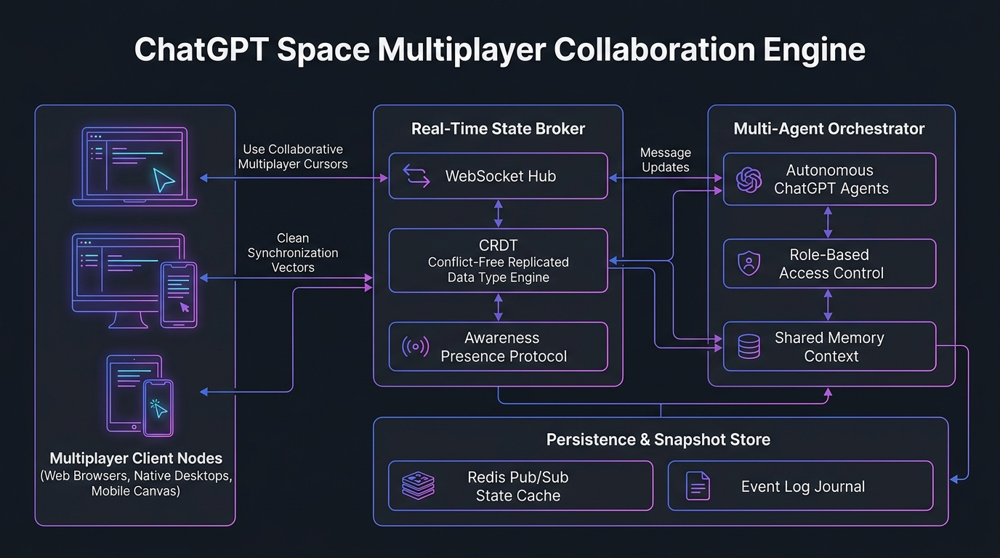

OpenAI DevDay 2026ChatGPT SpaceCRDT Real-Time SyncDots Team WorkersMulti-User Pair Coding
OpenAI ChatGPT Space & Multi-Agent Coworking Rooms Studio
Orchestrate shared virtual spaces where distributed engineering squads and autonomous background Dots collaborate simultaneously. Synchronize active state via Conflict-Free Replicated Data Types (CRDTs), live shared terminals, and consensus gates.
Document Sync Latency
< 15ms CRDT
Multi-peer WebSocket deltas
Max Concurrent Peers
250 Humans + Dots
Sub-room partitioned mesh
Consensus Model
Human Signoff Gate
Audited PR deployment lock
Omnichannel Sync
Slack & Teams Native
Bi-directional event mirroring
🏗️ ChatGPT Space Coworking Architecture & State Mesh
Multi-Agent Collaboration Engine
💻 Infrastructure & Software Technology Stack
🔄 Real-Time State Mesh & CRDT
- CRDT Engine: Yjs / Automerge with sub-15ms delta conflict resolution
- Transport: Full-Duplex WebSockets (WSS) & gRPC bidirectional streams
- Pub/Sub State: Redis 7.2 Cluster with Redis Streams & pub/sub channels
- Distributed Locking: Redlock algorithm & lease management for canvas elements
🤖 Multi-Agent Orchestration & AI
- Foundation Agents: OpenAI GPT-6.1 Sol (Code Agent) & GPT-6 Luna (Router)
- Agent Protocol: OpenAI Realtime Canvas Protocol & Model Context Protocol (MCP)
- Canvas Graph: Distributed Canvas DAG state store with schema versioning
- Permissions & RBAC: Token-scoped participant roles with human signoff gates
☸️ Cloud Infra & Omnichannel
- Sandboxes: Kubernetes ephemeral pods isolated with gVisor microVMs
- Ingress Proxy: Envoy Proxy with sticky session WebSocket connection pooling
- Chat Bridges: Slack & Microsoft Teams Bot Framework bi-directional sync
- Observability: Prometheus peer metrics & OpenTelemetry distributed traces
⚙️ Collaboration Room Configurations
💡 Squad Multiplier & Context Cohesion
By embedding autonomous Dots into shared ChatGPT Spaces, cross-functional squads eliminate asynchronous communication lags, resolving system incidents 4x faster while keeping humans continuously in the approval loop.
Loading ChatGPT Space configuration...